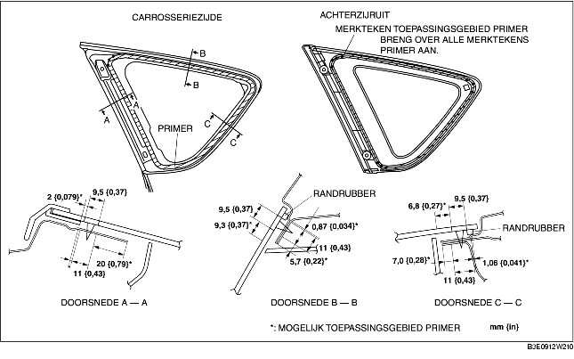

PLAATSEN ACHTERZIJRUIT
B3E091262580W02
-
Waarschuwing
-
• Door een hobbymes met blote handen te gebruiken kan er letsel ontstaan. Draag altijd handschoenen bij het gebruik van een hobbymes.
-
Opmerking
-
• Als er tijdens het plaatsen van de ruit een portier gesloten wordt terwijl de portierruiten gesloten zijn, kan dit scheurtjes in de kit veroorzaken of kan de voorruit door de luchtdruk naar buiten wordt gedrukt. Laat alle portierruiten open zolang de kit nog niet is uitgehard.
1. Snijd de oude kitlaag langs de omtrek van de sponning met een hobbymes weg tot de laag nog 1-2 mm {0,04-0,07 in} dik is.
2. Als de kitlaag ergens langs de omtrek helemaal is losgekomen, ontvet deze plaats dan, breng primer erop aan en laat deze ongeveer 30 minuten drogen. Breng vervolgens een nieuwe laag kit aan van 2 mm {0,08}.
3. Reinig en ontvet zorgvuldig een rand van ongeveer 50 mm {2,0 in} breed langs de omtrek van de ruit en het hechtvlak op de carrosserie.
4. Plaats het randrubber langs de omtrek van de ruit.
5. Gebruik de glasprimer alleen voor de ruit en de carrosserieprimer alleen voor de carrosserie. Laat ze gedurende ongeveer 30 minuten drogen.
-
Opmerking
-
• Zorg ervoor dat het hechtvlak niet vuil, vochtig of vet wordt, zodat er geen zwakke plekken in de aanhechting van de ruit komen. Raak het oppervlak niet met uw handen aan.

6. Breng ruitenkit aan op het glazen oppervlak zoals is aangegeven in de afbeelding.
7. Plaats de paspennen en clip op de carrosserie en plaats de achterzijruit.
8. Druk de achterzijruit goed vast op de plaatsen waar de paspennen zitten, zodat de borglippen goed in de carrosserie zitten.
9. Plaats de volgende onderdelen:
-
(1) C-stijlbekleding (Zie VERWIJDEREN/PLAATSEN C-STIJLBEKLEDING.)
-
(2) Bovenste zijpaneel bagageruimte (Zie VERWIJDEREN/PLAATSEN BOVENSTE ZIJBEKLEDING BAGAGERUIMTE.)
-
(3) Bekleding wielkuip (Zie VERWIJDEREN/PLAATSEN BEKLEDING WIELKUIP.)
-
(4) Dorpellijst achter (Zie VERWIJDEREN/PLAATSEN DORPELLIJST ACHTER.)
-
(5) Achterbank (Zie VERWIJDEREN/PLAATSEN ACHTERBANK.)
10. Laat de kit volledig uitharden.
-
Hardingstijd kit: 24 uur